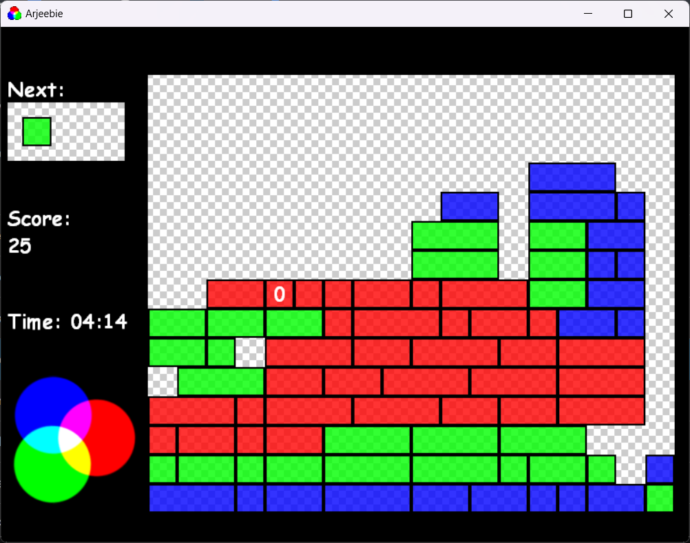

Arjeebie (October 2005)

Authors
Unknown
Description
Tetris, but with RGB colored blocks. Your goal is to mix the colored blocks into white. The more blocks you mix, the more points you get but the more color you need.
Downloads
Compatibility notes.
Tested and working on Windows 11.